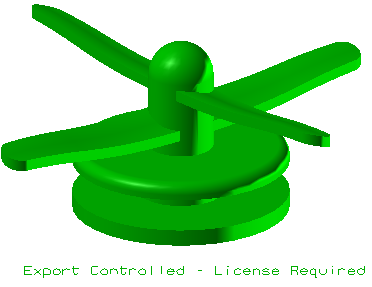

导出控制
使用导出控制  命令来在部件文件内储存导出控制说明。允许该信息被打开该部件的任何人看见。
命令来在部件文件内储存导出控制说明。允许该信息被打开该部件的任何人看见。

您可以将标记附着到部件中的几何体上，但标记将应用于整个部件。您对一个部件只能应用一个导出控制信息。
位于何处？
|
工具条 |
PMI→PMI 安全标记下拉菜单→导出控制 |
|
菜单 |
产品制造信息→安全标记→导出控制 |